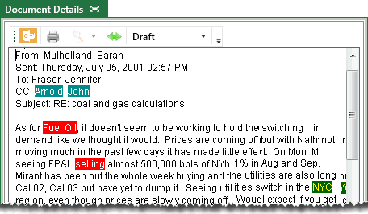

To assist users in finding key terms in a case, you can configure “persistent highlighting” to emphasize specific document content. This highlighting appears in the Native Viewer and Extracted Text tabs in Eclipse. The following example shows terms highlighted in the Extracted Text tab:

This page contains the following content:
As with all Eclipse tasks, proper planning will help ensure that persistent highlighting is useful to your reviewers. Identify the key terms that should be highlighted, whether or not terms are related and should have a common color scheme, and pertinent names for the types of highlighting being defined.
To define persistent highlighting:
Get started:
Start Eclipse Administration and log in as an Eclipse administrator.
Open the case for which persistent highlighting is being defined.
In the Case View pane, click Case Administration, and then Persistent Highlighting.
In the Case
Administration tab, click  .
.
Enter a name for the highlighting that will be meaningful to users.
Colors: Select background and font colors. Evaluate the sample text for legibility.
Terms: In the Terms field, enter all terms (one per line) that belong to this persistent highlighting group.
Permissions: If the highlighting should be restricted to certain review groups:
Click
 (to the right of the
Group By field).
(to the right of the
Group By field).
Select needed groups and click OK.
|
|
TIP: To make a highlight available to all groups that are currently defined for the case, click Select All. The form will be unavailable for groups added after this selection (unless you add them). |
When finished, click Save.
Repeat these steps to define additional highlighting.
Explain highlighting to users and/or add applicable case instructions.
To revised or delete persistent highlighting:
Get started:
Start Eclipse Administration and log in as an Eclipse administrator.
Open the case for which persistent highlighting is being revised.
In the Case View pane, click Case Administration, and then Persistent Highlighting.
In the list of persistent highlights, click the one to be modified. For tips on working in lists, see Use Lists.
To delete
the selected persistent highlight, click  , then click
Yes in response to the confirmation
message.
, then click
Yes in response to the confirmation
message.
To revise the selected persistent highlight, click and change the color scheme, add or remove terms that should be highlighted, and/or change security. For details, see Define Persistent Highlighting.
When finished, click Save.
Notify users of the changes that have been made.